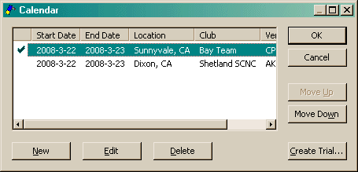

This dialog is used to display several different styles of lists. The one shown below is used for multiple calendar entries. In addition, this dialog is used for managing lists of Faults, Other Points and Partners (the Create Trial button is only available on the Calendar entry list).

Note, when moving Calendar entries up or down, it may appear that the entry doesn't really get moved after you close the dialog. This is because Calendar entries get sorted by date when you close the dialog. In addition, if you hide entries on dates where you have entered a trial, the entered trial will always appear first. If you move it last, then change the hide option, the calendar entry will then appear last. Changing the hide option back will cause the entry to appear first, even though it is still last in the list. (Confused? Don't think about it too much!)